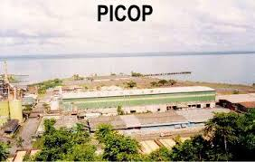
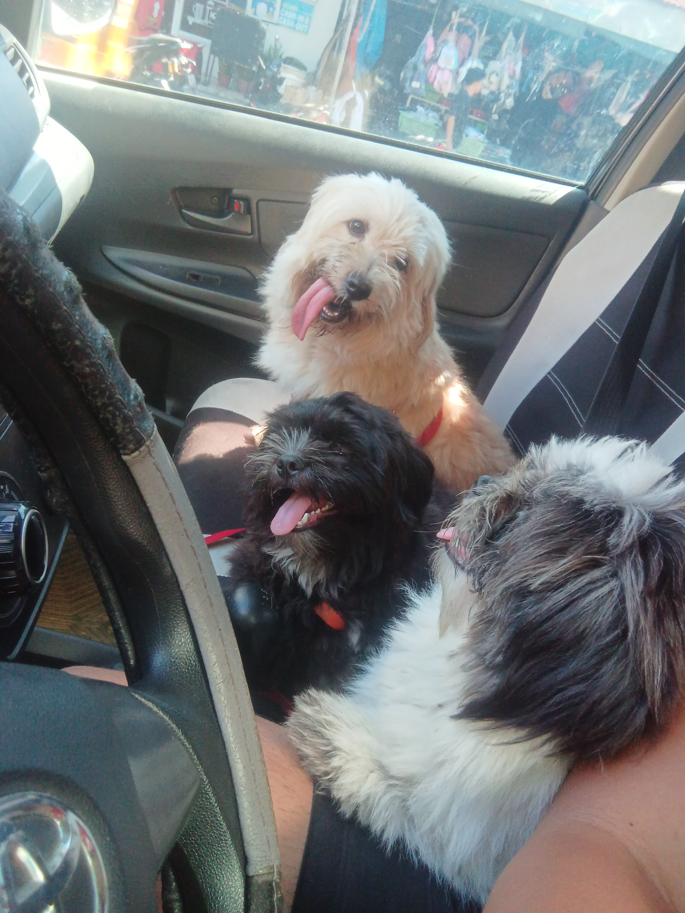

About Me
![[A photo of me]](images/main_profile.jpg)
Student, BS Computer Science, University of Mindanao
Location: Bislig City, Surigao Del Sur
Email Me |
GitHub Profile
Early life and education
My story doesn't start with me. It starts with my parents, and what brought them together.

In 1963, a paper-mill company named Paper Industries Corporation of the Philippines (PICOP) established itself
in Bislig City, Surigao Del Sur. This sparked a massive economic boom in the area, attracting workers from various
regions, including my parents and their parents at the time. They met as teachers in a local school established by
PICOP, and from their union came my older sister. Some time later, I was born.
I come from a town where almost everyone is a descendant of the workers of this now defunct company, and the thought
that none of us would have been here today had this one single company not picked this town is something
I often reflect on.
Image taken from Facebook
It hadn't taken long for my parents to realize raising two children on a teacher's salary would be difficult (They realized this in the early 2000s, imagine how much worse things are now). My father, ever the opportunist, decided to abandon his career as an educator and decided to pursue a career in law enforcement. A move so succesful, that it had influenced my early childhood wants and dreams growing up.
I grew up quickly. Being the only son of a policeman had its drawbacks. Beyond that, I also had a strict and stern mother. I didn't quite get what people meant when they insinuated that the "bunso" is treated well, as I had the total opposite experience growing up. Of course, I was only the "bunso" for about 12 years before a younger sister came along.
I attended the same school where both my parents first met in, all throughout elementary and high school. It became a Catholic private school by the time me and my siblings attended. As a grade schooler I was boisterous and fun like I am now, but by the time high school came around I was reserved and quiet. I'd sit in my chair and let the day pass by. This was around the same time my mother got promoted to school principal, so I guess that kinda added to me seeming intense and intimidating to my peers. It didn't matter.
I did of course discover that the position meant I could be absent as much as I wanted without any repercussions, so long as I kept my grades up.
![[Photo of me 400 kms away from home, in a totally foreign environment]](images/msu-iit.jpg)
Picture taken: Some time 2023
After high school, I was offered the opportunity to move to Iligan City to attend Mindanao State University - Iligan Institute of Technology's Integrated Developmental School, which is just the fancy name for their Senior High School department. I accepted the offer, and moved to Iligan City, about 400 kilometers away from home.
While the earlier bio made it seem like I didn't have any friends growing up, I actually had a lot. They all later went to Davao City for college, while I chose to go to Iligan to ensure that my Senior High School slot would translate to a higher priority in college application at MSU-IIT. It was a tough decision, but one I don't regret. I learned a lot about myself and life during my time there. It also was ultimately all for nothing, as MSU-IIT is quite possibly the toughest state university to get into in Mindanao.
There were only 40 slots each for the half-dozen computing-related courses they offered, and I was competing with thousands of other applicants from all over the Philippines. I didn't get in. In a way I was relieved, I quite didn't like the place. It sucked. So I went back home, and followed my friends to Davao, where my lazy ass decided to enroll in the University of Mindanao. I enrolled in the summer. MSU-IIT's senior high school ends early to actually prime their own students for the MSU-IIT entrance exams. So I had a lot of time to spare. I was officially enrolled as a First Year, in the summer term. Best decision of my life.

Their names are Bailey (Brown), Charlie (Black), and Angel (Oreo cookie). They are good dogs.
I am always open to discussing literally anything, anything at all. I use my own full legal name on all my socials. If you need to contact me directly now:
You can reach me via email at: [scmad@proton.me]
Or point and laugh at my shit on GitHub: github.com/sgmad
mehehe